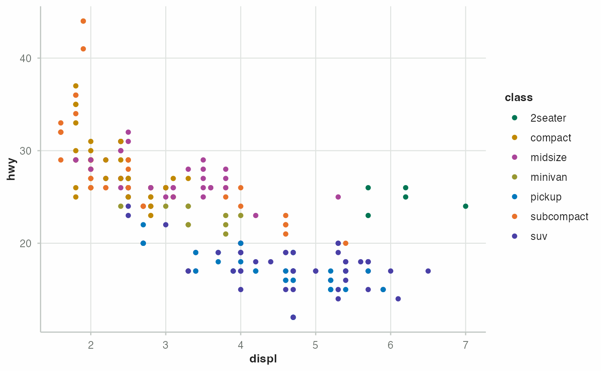

Provides a consistent ggplot2 theme aligned with the brand typography, background, rule grids, and primary colors of the document theme.
Usage
theme_mariner(
theme = mariner_themes,
format = mariner_formats,
base_size = 11,
base_family = NULL,
...
)Arguments
- theme
Theme name. Defaults to the built-in mariner theme.
- format
One of mariner_formats.
- base_size
Base font size in points. Defaults to
11, matching the report body text set in_extension.yml.- base_family
Font family name. Defaults to
"Atkinson Hyperlegible Next".- ...
Additional arguments passed to
ggplot2::theme().
Examples
library(ggplot2)
ggplot(mpg, aes(displ, hwy, colour = class)) +
geom_point() +
scale_colour_mariner_d() +
theme_mariner()
